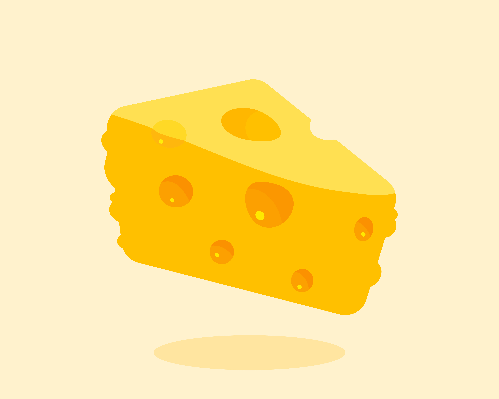

Benefits Of Beans
Beef, a rich source of high-quality protein, iron, and essential vitamins, offers benefits such as muscle development, weight management, and versatility in cooking. Its nutrient profile supports overall health, but moderation and choosing lean cuts are key for a balanced diet. As with any dietary choice, individual needs may vary, and consulting with a healthcare professional is advisable.
An Apple A Day
Apples are nutrient-dense, providing fiber for digestive health, antioxidants like flavonoids for heart health, and a range of vitamins, including vitamin C. With a low calorie count, apples are a satisfying and wholesome snack that supports overall well-being. Incorporating apples into a balanced diet can contribute to improved immunity and a healthier lifestyle.
Kidney Beans
Kidney beans are a nutrient powerhouse, offering a rich source of plant-based protein, fiber, and essential minerals such as iron and potassium. Their high fiber content promotes digestive health, while the combination of nutrients supports overall heart health. Including kidney beans in meals adds both flavor and nutritional value to a well-rounded diet.

Why Banana?
Bananas are a nutritious fruit, packed with potassium that supports heart health and aids in maintaining proper blood pressure. With natural sugars, they provide a quick energy boost, making them an excellent snack for sustained vitality. Bananas also offer essential vitamins, like vitamin C and B6, contributing to overall well-being and immune function.

Salted cheese
Salted cheese, with its savory and salty profile, enhances the flavor of various dishes, from salads to pastas. The salt content not only adds taste but also acts as a natural preservative, extending the cheese's shelf life. When used in moderation, salted cheese can contribute to a delightful culinary experience while providing a source of calcium and protein.
Why Eat Salmon
Salmon is a nutrient-rich fish, renowned for its high omega-3 fatty acids content, promoting heart and brain health. Packed with quality protein, salmon supports muscle development and overall well-being. Its versatility in cooking makes it a delicious and healthful addition to a balanced diet.